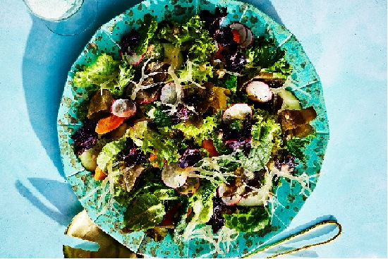

Seaweed and Greens Salad

Delicios and Healthy Salad
In this Hearty Side Salad that blends sea greens and land greens, fresh salad greens, carrots, radishes, and cucumber get a boost of salinity and texture from three different types of nutritious and delicious seaweeds: kelp, dulse, and Irish moss. The trio of mineral-forward sea vegetables is nicely balanced by rice vinegar dressing.
Ingredients
Dressing
- 1 tablespoon rice vinegar
- 1 tablespoon finely chopped shallot
- 1 tablespoon fresh lemon juice
- 1 teaspoon Dijon mustard
- ¼ teaspoon honey
- 2 tablespoons neutral cooking oil (such as grapeseed)
- 1 tablespoon extra-virgin olive oil
- ½ teaspoon fine sea salt, plus more to taste
- ⅛ teaspoon black pepper, plus more to taste
Salad
- 8 cups leafy salad greens, torn into bite-size pieces
- 1 cup frozen ready-cut kelp (such as Atlantic Sea Farms), thawed
- ¾ cup diagonally sliced (1/8-inch-thick) carrots
- ½ cup thinly sliced radishes
- ½ cup diagonally sliced (1/8-inch-thick) cucumber
- ½ cup dried whole-leaf dulse (such as Maine Coast Sea Vegetables)
- ½ cup dried whole-leaf Irish moss (such as Maine Coast Sea Vegetables), torn into bite-size pieces
- Kosher salt, to taste
- Black pepper, to taste
Directions
- Whisk together vinegar, shallot, lemon juice, mustard, and honey in a small bowl until combined. Gradually add oils in a thin, steady stream, whisking until emulsified. Whisk in salt and pepper.
- Toss together salad greens, kelp, carrots, radishes, cucumber, dulse, and Irish moss in a large bowl. Drizzle with dressing, and toss gently to coat. Season salad with additional salt and pepper to taste. Serve immediately.